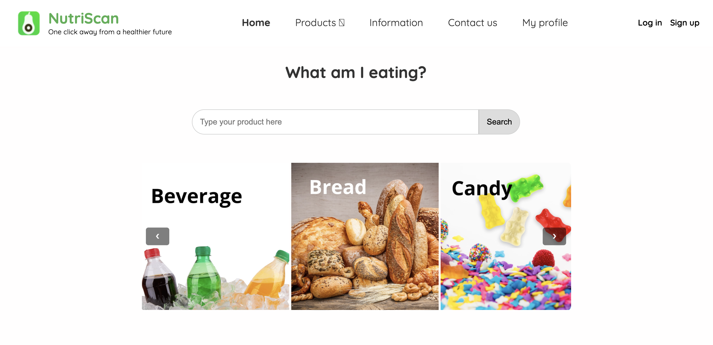
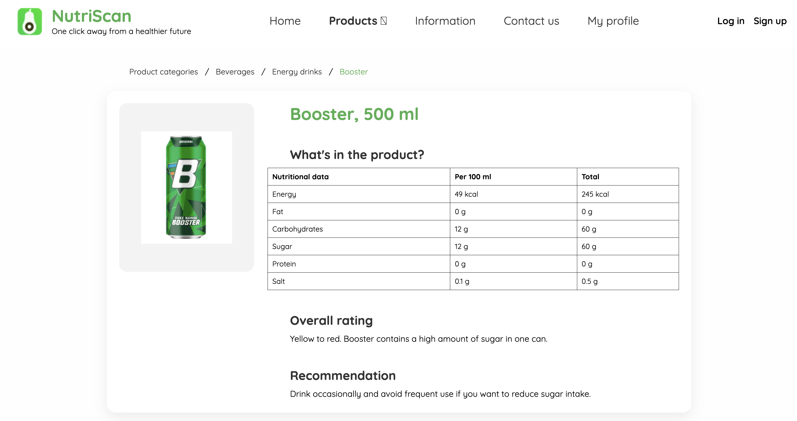
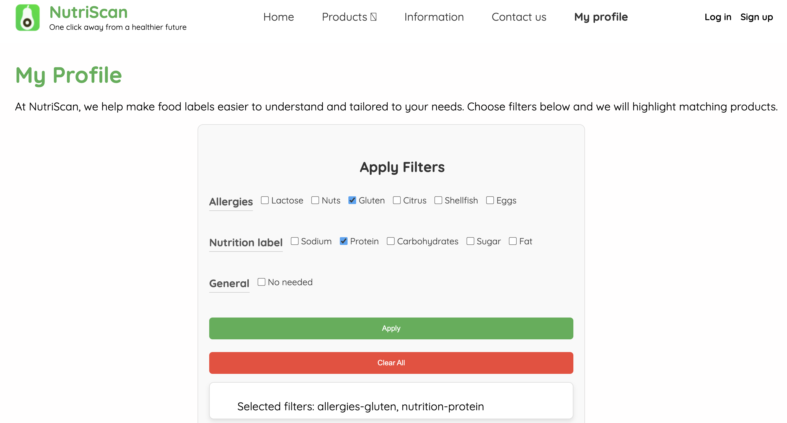

NutriScan
A frontend web prototype designed to make nutritional information easier to understand through clearer structure, visual hierarchy and a more accessible browsing experience.

Type
Group project
Tools
HTML, CSS, JavaScript
Focus
Frontend development, UI design, usability
Repository
View on GitHub ↗
About the project
NutriScan was developed as a web-based prototype exploring how nutritional information can be presented in a clearer and more user-friendly way. The project focused on improving how users browse products, understand nutritional tables and navigate food-related information through a structured frontend interface.
My contribution
- Frontend development in HTML, CSS and JavaScript
- Homepage and navigation structure
- Search functionality for predefined products
- Product page design and layout consistency
- Translation of user research into interface decisions
Highlights

Homepage overview

Product page

Nutritional information layout

Filtering and user preferences